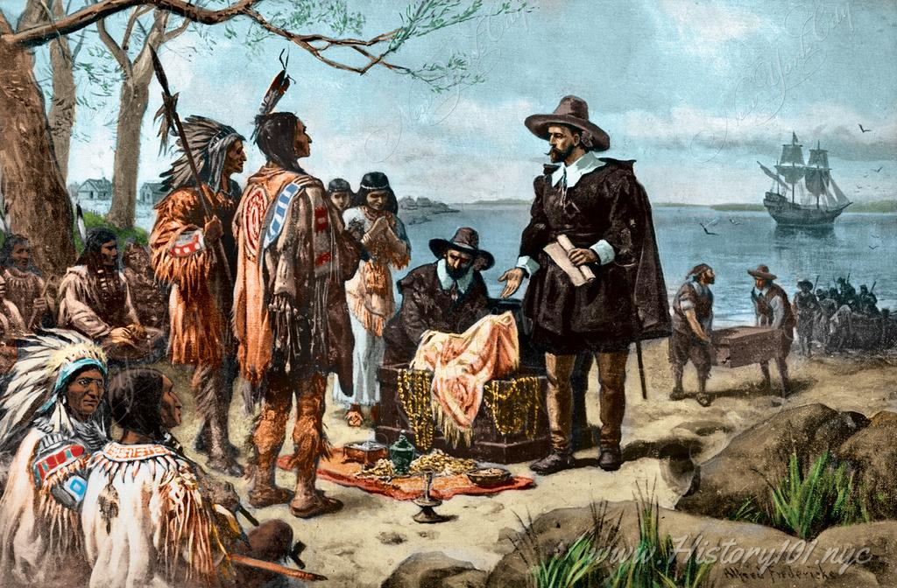
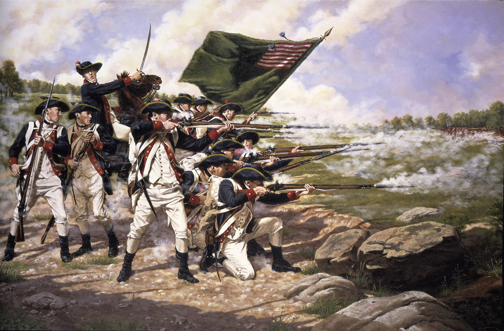

History of New York
Early Beginnings and Colonial Era
New York's rich history traces back to its early beginnings as a Dutch settlement known as New Amsterdam, founded by the Dutch West India Company in 1624. Originally inhabited by Native American tribes such as the Lenape, the area quickly became a bustling trade hub due to its strategic location at the mouth of the Hudson River. In 1664, the English seized control of the colony, renaming it New York in honor of the Duke of York, later King James II of England. Under English rule, New York flourished as a diverse and cosmopolitan city, attracting settlers from various European countries and African slaves. The colonial era saw the establishment of key institutions and traditions that would shape the city's identity, including its characteristic grid street layout and its role as a center for commerce, culture, and politics in North America.
Revolutionary Struggles and Statehood
New York played a pivotal role in the American Revolutionary War, marked by a series of struggles and triumphs that ultimately shaped the course of the nation's history. As one of the thirteen colonies, New York became a focal point of conflict between British forces and colonial rebels seeking independence. Iconic battles such as the Battle of Long Island in 1776 highlighted the city's strategic importance and the resilience of its inhabitants in the face of adversity. Despite early setbacks, New York emerged as a key stronghold for the revolutionary cause, hosting significant events such as the drafting of the Declaration of Independence and the inauguration of George Washington as the first President of the United States. The state of New York was officially admitted to the Union on July 26, 1788, becoming the eleventh state to join the fledgling nation. Its legacy as a bastion of liberty and progress continues to resonate, shaping both the state's identity and its enduring contributions to American history.
Industrialization, Innovation, and Modernity
New York's role in the Industrial Revolution was transformative, propelling the city into a new era of innovation and modernity. As a leading center of commerce and industry, New York became a hub for technological advancements, drawing in waves of immigrants seeking economic opportunities. Throughout the 19th and 20th centuries, the city's skyline was reshaped by towering skyscrapers and industrial infrastructure, symbolizing its rapid growth and prosperity. Innovations such as the Erie Canal, completed in 1825, revolutionized transportation and trade, further cementing New York's status as a global economic powerhouse. The city's entrepreneurial spirit fostered breakthroughs in finance, communications, and manufacturing, with iconic figures like Thomas Edison and Nikola Tesla leaving their mark on the landscape of innovation. Today, New York continues to be a beacon of progress and creativity, driving forward advancements in technology, culture, and commerce on the world stage.